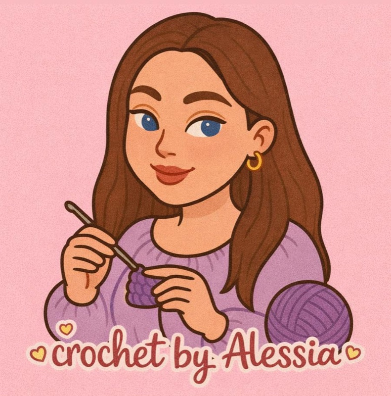
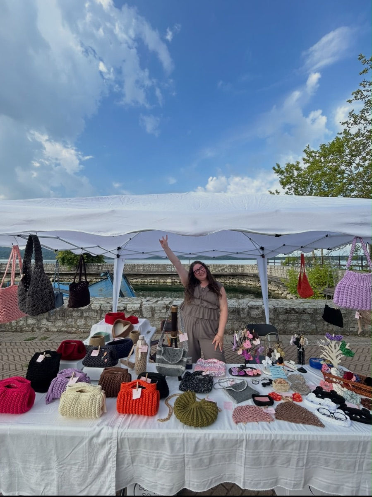
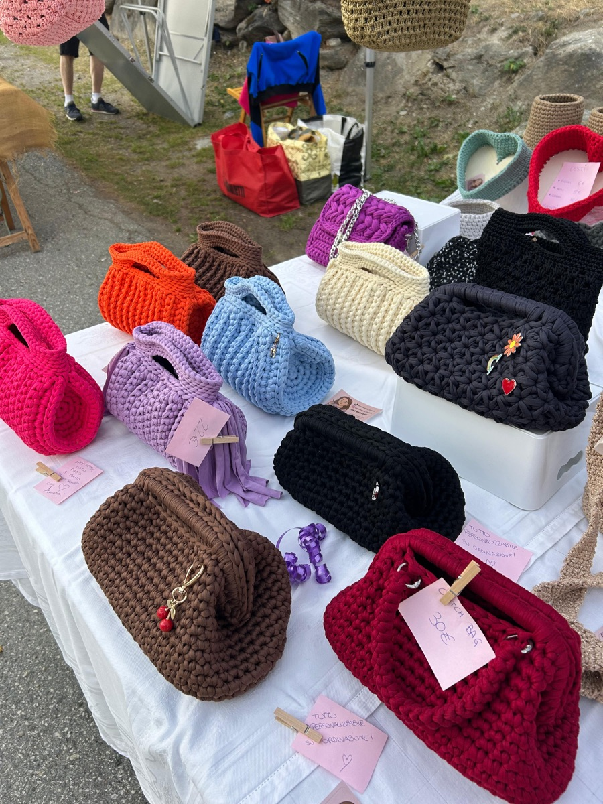
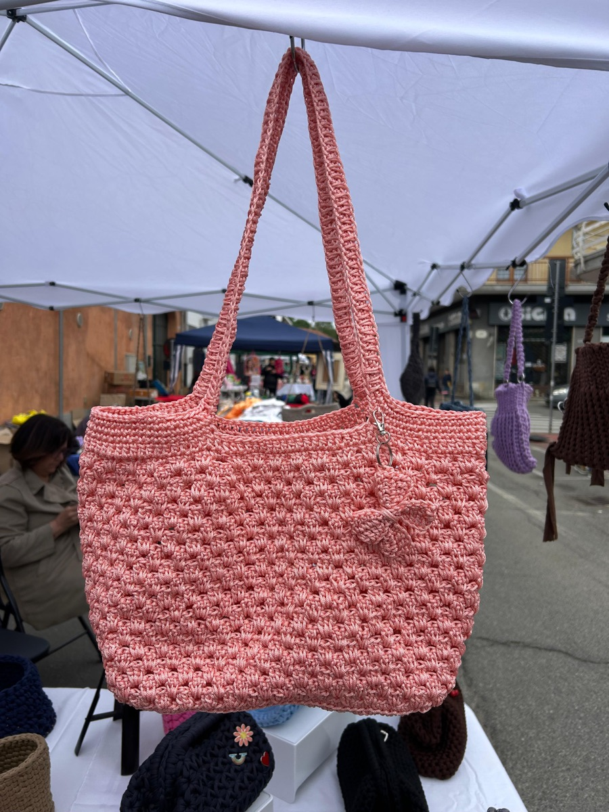
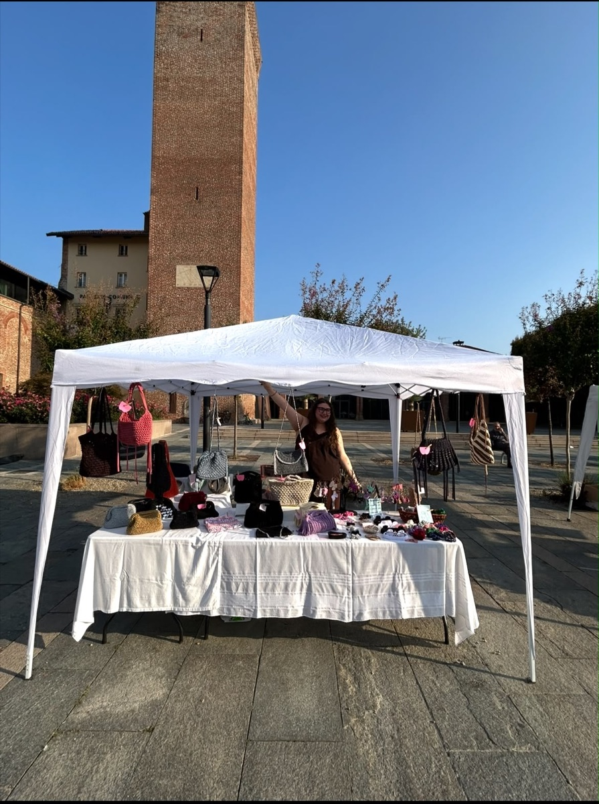
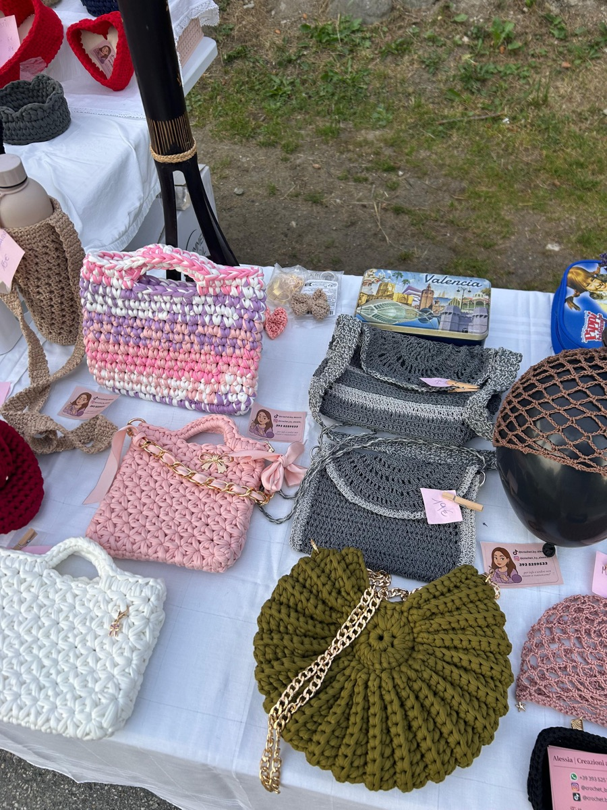
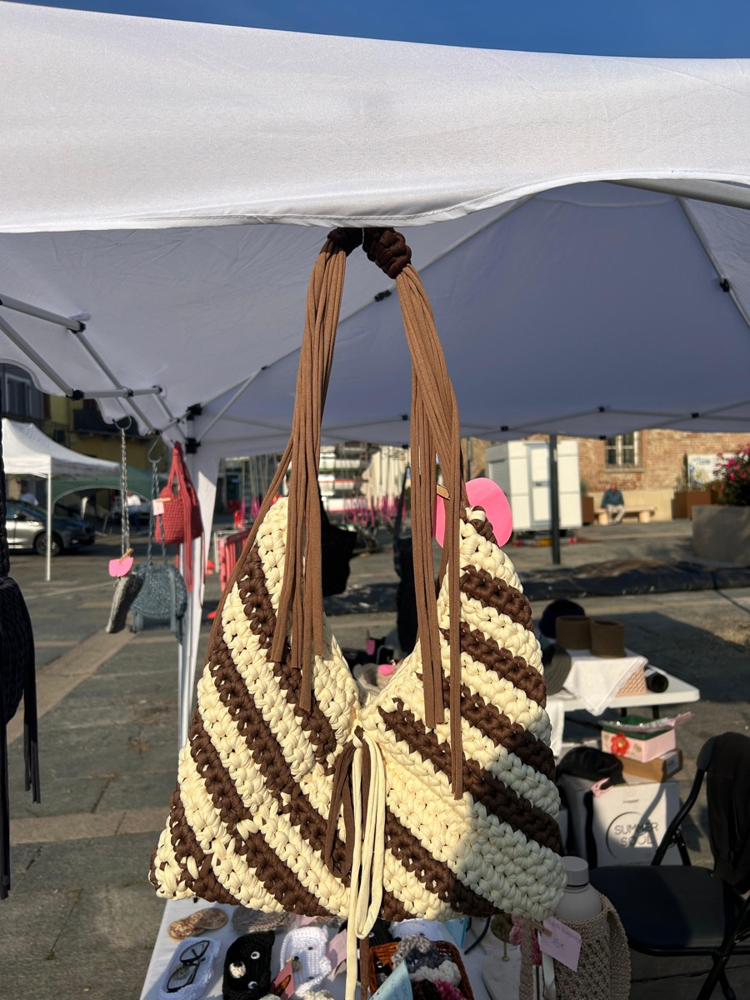

4 foto
4 fotoConchiglia
La forma a ventaglio, con manico in bambù o catena.
Piccole creazioni fatte a mano, un punto alla volta. Scegli tra le mie borse o chiedimi qualcosa fatto apposta per te.

Borse, clutch, accessori e oggetti per la casa. Clicca su una categoria per vedere tutti i lavori: sono esempi, li rifaccio per te nei colori che preferisci e molti li trovi ai mercatini.
4 fotoLa forma a ventaglio, con manico in bambù o catena.
 2 foto
2 fotoDa mano, con catena dorata.

Piccola e morbida, da mano.
 2 foto
2 fotoBeige e nero, con catena dorata.
 8 foto
8 fotoRigido e capiente, con manici e chiusura. In tanti colori.
 3 foto
3 fotoA spalla, con frange e spille.
 5 foto
5 fotoLeggera, a spalla, con il punto a rete.
 2 foto
2 fotoCon chiusura gioiello e catena.
 2 foto
2 fotoCon la tracolla a catena.
 9 foto
9 fotoCapienti, per tutti i giorni o per il mare.
 2 foto
2 fotoCon coulisse e fiocco.
 2 foto
2 fotoCon chiusura in metallo.
 14 foto
14 fotoCon chiusura a molla, in tanti filati e colori, con spille e charm a scelta.
 3 foto
3 fotoElastici morbidi in tanti colori.

Da mettere su borse e capelli.
 3 foto
3 fotoA forma di gatto e orsetto.
 2 foto
2 fotoCon tracolla.
 2 foto
2 fotoTondi, con il gattino.
 2 foto
2 fotoCentrotavola con nappine.
 6 foto
6 fotoPer la casa o un regalo.
 3 foto
3 fotoPer mettere in ordine con stile.

Cuoricini per le tue feste.
Su WhatsApp o Instagram, raccontami cosa ti piacerebbe.
Colori, filato e misure: decidiamo ogni dettaglio.
In circa due settimane, il tempo di prendere il materiale e lavorarlo, è pronto: te lo consegno o te lo spedisco.
Ciao! Sono Alessia e dietro ogni creazione c'è la mia passione per l'uncinetto e per tutto ciò che nasce dalla fantasia e dalla manualità.
Crochet by Alessia è il mio piccolo spazio creativo, dove ogni filo prende forma e si trasforma in qualcosa di unico, realizzato interamente a mano con cura, amore e attenzione ai dettagli.
Borse, accessori e piccoli oggetti pensati per aggiungere un tocco di originalità alla quotidianità.
Perché ogni creazione handmade è speciale: nessuna è esattamente uguale all'altra, proprio come chi la sceglie.
Fatto a mano, con passione e un pizzico di creatività! 💕
Le mie creazioni sono fatte per essere viste da vicino: ecco come averle.
domenica 8 nov
📍 Vie del centro storico, Volpiano (TO)
Più informazioni →





Partecipo ai mercatini a Torino e provincia: passa a trovarmi, guarda e tocca i miei lavori.
Se sei in zona ci organizziamo e te la porto io.
Sei lontano? Te la spedisco a casa, ben impacchettata. Il costo lo valutiamo insieme in base a dove abiti.
“No vabbè, ma è stupenda! Sapevo che non mi avresti delusa, tu non deludi mai! È proprio come la desideravo, e poi è dolcissima. Si vede proprio che ci metti passione e amore 💜”
Borsa lilla su richiesta
“Ho aperto la busta e visto la borsa: bellissima, venuta davvero bene! Sono strasoddisfatto, grazie mille 🫶”
Borsa
“Sì, è stata un successo! Complimenti anche da parte di mia mamma. Ancora grazie mille 💕”
Borsa regalo
“A mia sorella è piaciuto tanto lo zaino. Ti ringrazia 😊”
Zainetto
“Bellissimo… Grazie! 😘”
Cestino
“A mia mamma è piaciuta tantissimo 😊”
Regalo
Scrivimi, ti rispondo il prima possibile.